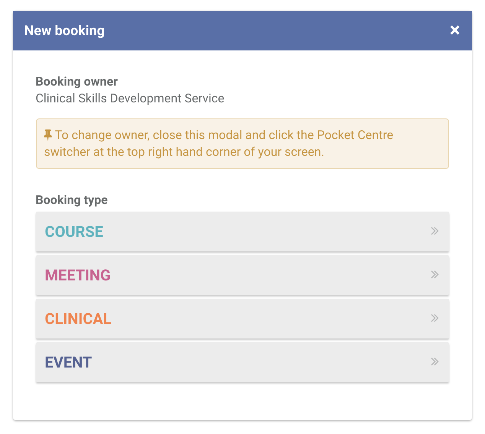
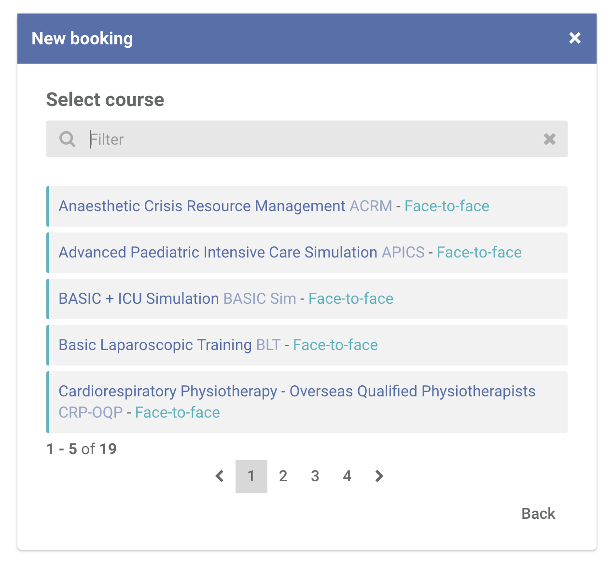
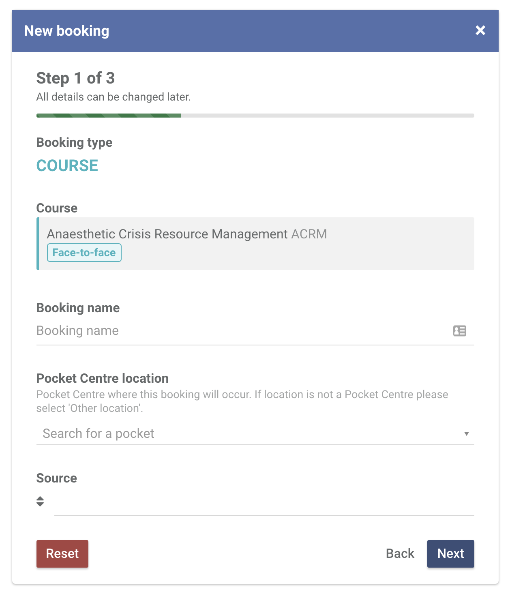
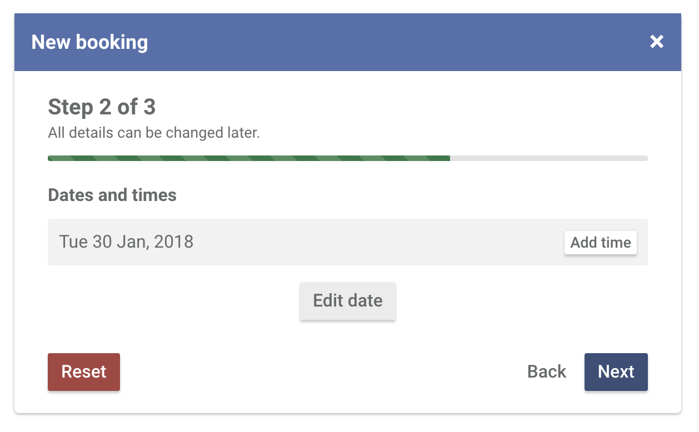
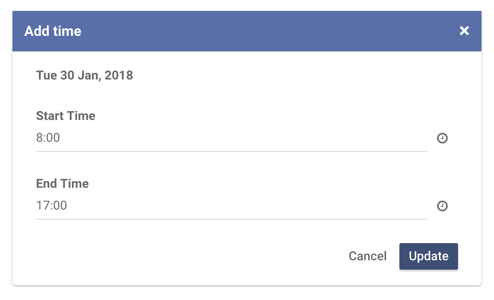
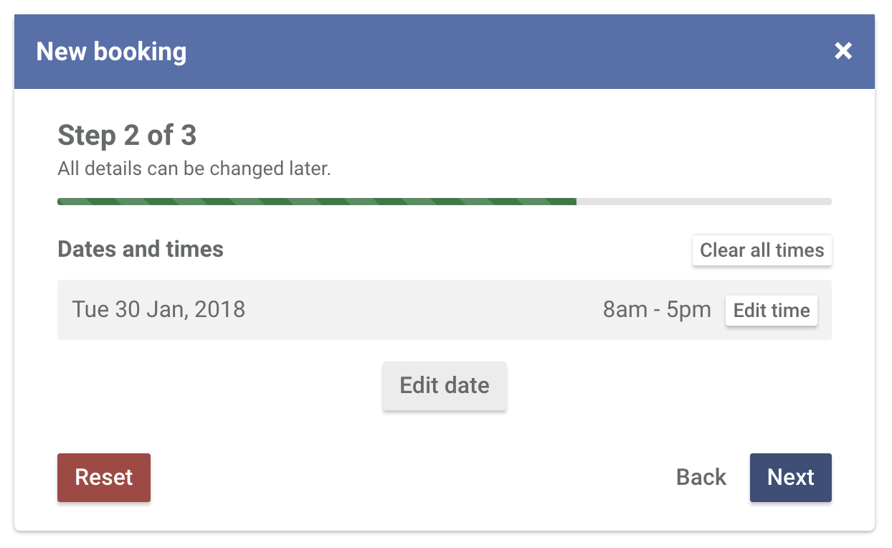
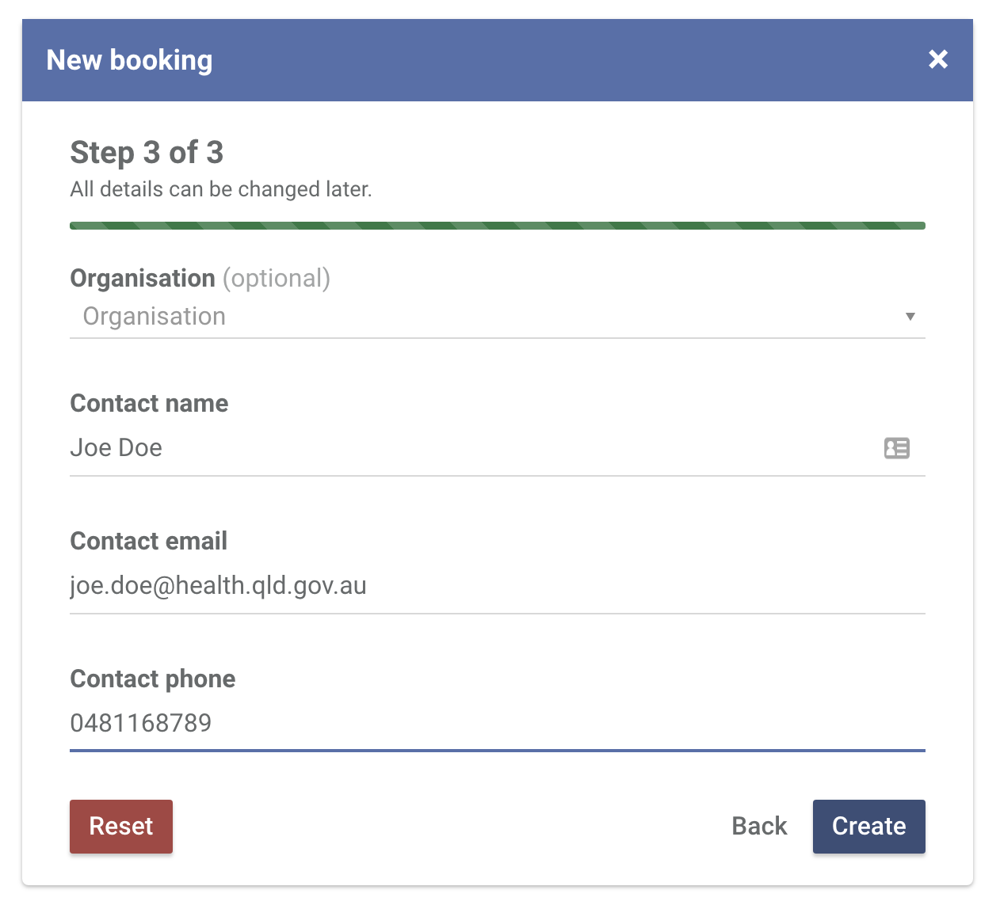

Head over to the Bookings section and click New booking.
Click COURSE booking type.
The courses that appear in this list should only include courses your Pocket Centre has access to and have created.
Booking name is a way to identify a certain booking. This name is only used within Central.
Unless the booking is happening outside of your Pocket Centre, select your own Pocket Centre as the location.
Click Add date to select a date range.
If it's a single day event, use the same start and end date.
Click Add time to specify a time on the dates you have selected.
By default, 7:30 - 17:00 will be specified as the start and end time. Click Update.
Once all of your dates and times are specified, click Next.
The booking contact refers to the person responsible for the booking. If it's an external event/meeting, this is the person making the booking.
The booking contact also receives the confirmation email.
Click Create.
You will now be redirected to the booking profile page where you can add rooms, manage participants, add faculty and so much more.